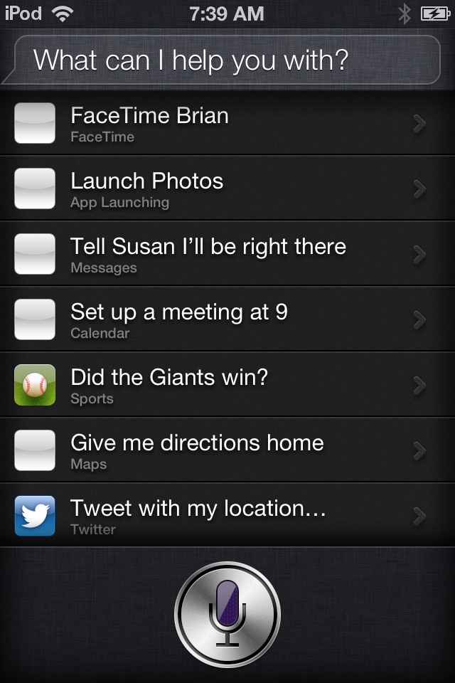
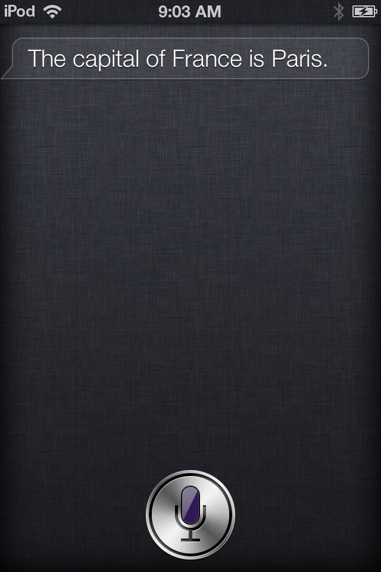

Siri on an iPod touch 4, answered on the device
How the genuine iOS 6 Siri interface came to a 2010 iPod, and how its questions are answered by speech recognition and a language model that run on the iPod's own 1 GHz core and 256 MB of RAM.
The boxed figures are live: click, drag and step through them. Every number was measured on the iPod.



Siri arrived in October 2011 with the iPhone 4S and iOS 5. The iPod touch 4th generation, sold until 2013 and updated to iOS 6.1.6, never got it. Apple's line was that Siri needed the 4S's hardware. In truth, Siri's speech recognition and answers ran on Apple's servers, which went dark years ago, so even a real 4S no longer has a working Siri.
This project gives the iPod the real thing, Apple's own interface, and answers it with a small "server" that runs on the iPod. Speech recognition is Cactus Compute's Whistle and the answers come from SmolLM2-135M-Instruct, both rewritten in plain C. Nothing leaves the device.The repository holds only original code. Apple's files come from firmware you download from Apple yourself, and stay on your machine. See the README.
1. The hardware
| Part | What it means here |
|---|---|
| Apple A4: one Cortex-A8 core at ~1 GHz with NEON | One thread of work. NEON does 4 to 16 small multiplies per instruction, which is what makes the models usable at all. |
| 256 MB of RAM | About 46 MB is wired by the kernel and drivers. SpringBoard, the daemons and Siri take another ~60 MB, leaving roughly 100 to 130 MB for the models. |
| Memory bandwidth: 370 MB/s (measured) | Producing one word of the answer means reading every weight once: 66 MB, so at most ~5 words per second. |
| Flash: 80 MB/s read sequentially, ~6 MB/s via page faults (measured) | How a model is brought back into RAM matters more than almost anything else (§9). |
| iOS 6.1.6, jailbroken | Root access, SSH, and Cydia Substrate to patch running code. |
Everything is cross-compiled on a Mac with the compiler from Xcode 4.6.3. It's the last Apple toolchain that still targets armv7 and iOS 6, and it runs under Rosetta.
2. What Siri is made of
On iOS 6, Siri is several pieces that talk to each other:
SpringBoard ──── Assistant.uibundle (the Siri screen) ── AssistantUI.framework
│ │
│ AssistantServices │ XPC
▼ ▼
assistantd ── records audio (AVVoiceController), keeps the session ──▶ "ACE" over HTTPS
│
guzzoni.apple.com ◀───┘ (offline today)
The iPod has none of the files on disk. But every iOS device keeps its system frameworks in one big pre-linked file, the dyld shared cache. Comparing the iPod's cache with the iPhone 4S's turned up a surprise: the iPod already contains AssistantServices and SAObjects, probably because other features share them. Every library assistantd links against is there too.
So the shopping list is short: about 45 MB of ordinary files from the 4S's iOS 6.1.3 root filesystem, plus one binary, AssistantUI, that exists only inside the 4S's shared cache. The firmware is still on Apple's servers. Only the root filesystem image (925 MB) is fetched, from inside the IPSW zip, and it is decrypted with its published key.
3. Pulling a library out of another phone's cache
A library inside a shared cache isn't a normal library any more. When Apple builds the cache, it lays out every framework at fixed addresses and links them to each other ahead of time. It then throws away the information a library would need to load anywhere else. Copied out naively, AssistantUI is full of pointers into the 4S's memory map, which means nothing on the iPod.
kennytm's dyld_decache does the first part: it copies the library's segments and symbol tables back out, and copies the Objective-C selector strings it uses. At the pinned commit it wrote empty files, because a refactor had moved segment collection into a function the decacher never calls. That's a one-line fix. Even then, the result crashed the moment SpringBoard used it. port/fixdylib.py repairs the rest. Here is what it found:
Two more details mattered:
- Page alignment. The decacher packs segments back to back, so the data segment's file offset wasn't a multiple of 4 KiB. dyld maps each segment with
mmap, which requires alignment, and refused with "mmap() error 22". The tool pads the file and shifts every file offset in the load commands. - A 96 MB span. The code and data segments sit 96 MB apart, as they did in the cache, and code reaches data PC-relatively. So that gap has to stay, and dyld reserves the whole span. SpringBoard has the address space to spare.
After repair, all 24 of AssistantUI's classes load with the right superclasses, every one of its 310 method implementations points into the library, and Siri's screen appears.
4. Convincing the iPod it can run Siri
iOS asks MobileGestalt, its device-capability database, whether Siri is supported (the assistant key). SpringBoard also honours a hidden SBAssistantCapabilityOverride preference, but assistantd asks MobileGestalt directly. So a small Substrate tweak hooks MGCopyAnswer to say yes.
The first version crashed assistantd with an illegal instruction. On iOS 6, MGCopyAnswer starts with a 4-byte Thumb-2 b.w that jumps to the very next instruction. Substrate copies the first instructions of a hooked function into a trampoline. It copied that PC-relative branch unchanged, so calling the original function jumped into garbage. The fix is to hook four bytes later, past the branch.MGGetBoolAnswer, the usual hook target in later iOS versions, doesn't exist yet on iOS 6.
Code patching turned out to be unavailable inside assistantd anyway: Substrate refuses with "process is not CS_VALID". The later fixes therefore swap Objective-C method implementations or rewrite symbol pointers in data pages, and never patch code.
5. A microphone without Speex
Opening Siri now worked, but every request failed instantly with "I can't take any requests right now". The system log showed mediaserverd: AudioConverterNew returned -50. Siri on iOS 6 compresses your voice with the Speex codec before sending it. The iPhone 4S's audio codecs include a Speex encoder; the iPod's don't.
The tweak intercepts -[AVVoiceController prepareRecordWithSettings:error:] and asks for 16 kHz, 16-bit mono PCM instead. That alone still failed: Siri passes a sample rate of 0, meaning "the codec's default", which PCM doesn't have. With the rate forced to 16,000, recording works. In practice the iPod sometimes still records Speex, and assistantd labels the stream Speex_WB_Quality8 either way. The server decides from the first packet: Speex frames are about 70 bytes, PCM buffers hundreds. It decodes Speex with the BSD-licensed reference decoder compiled in.
There was a second, odder failure: Siri gave up because it never heard you start talking. That's correct in a silent room. For unattended tests, the tweak can report the start and end of speech itself when a test recording is present, and the server answers from that recording.
6. Speaking Siri's protocol
Siri talks to its server with ACE, which the SiriProxy community and SiriServerCore documented in 2011:
- an HTTP-looking request line,
ACE /ace HTTP/1.0; - then the bytes
AA CC EE 02; - then a zlib stream in each direction. It carries binary property lists ("objects", each with a class, a group, an id and a reference id), plus pings and pongs.
acesrv is a few hundred lines of C that implement the server side. This is a real conversation with the iPod's assistantd, recorded by acesrv:
Two lessons came from the real client, both invisible to a test client:
- Sync replies. Siri waits for answers to its sync commands (
GetAnchors,Chunk) before it sends any speech. - Apple-sized timeouts. Siri's timeouts expect Apple's data centres. If no reply object arrives within seconds, it drops the connection and sends the whole request again, even while pings are being answered. Speech recognition alone takes 1.5 to 3.5 s on the iPod, and paging in the language model takes longer. So the tweak disables
ADAceConnection's response timers. acesrv runs the models on a worker thread, keeps answering pings, and attaches a resent request to the job already running instead of starting a second one.
7. Keeping Siri away from Apple
assistantd reads a Server Override preference, and it even accepts plain http:// URLs ("Connecting to insecure ace server"). So no certificate has to be trusted. The first attempt, http://127.0.0.1:4443, was quietly rejected, though. The log said "Bad server override", and Siri connected to guzzoni.apple.com instead.
That really happened during development: a handful of sessions reached Apple's server, which rejected them at session validation. The audio in those tests was silence. To make sure it can't happen again, the installer maps guzzoni.apple.com to 127.0.0.1 in /etc/hosts before anything else.
The rule, found in the disassembly: an override's host must end in apple.com, or contain apple.com:. So the override is http://guzzoni.apple.com:4443, and the hosts entry sends it, and Siri's built-in fallback, to the iPod itself.
8. The on-device brain
localsirid is a daemon with both models loaded via mmap:
- Whistle turns audio into text. It's an encoder–decoder transformer with a few unusual parts: Kronecker-factored "Hadamard" MLPs, four-lane hyper-connections between layers, and hashed n-gram memories. Cactus ships it as one 16.9 MB file. The C port reads that file as it is, and its transcripts match a NumPy reference, which in turn matches Cactus's own engine.
- SmolLM2-135M-Instruct writes the answer. It's stored in Whistle's weight format, 76 MB in all. Each weight's rounding is chosen GPTQ-style against real activations, rather than to the nearest level.
That format is codebook quantization. Each group of weights is rotated by a Walsh–Hadamard matrix, which makes its values look Gaussian. The group is then stored as one length plus a 2- or 4-bit index per weight into a codebook fitted to a Gaussian. The rotation is its own inverse, so the kernel never rebuilds the weights. Instead it rotates the activations once per group with a fast transform and turns each index into an int8 level with one NEON table lookup.
The earlier pair, Moonshine Tiny (30 MB) and an int4/int8 SmolLM2 (98 MB), is still supported as a fallback. Whistle matched Moonshine's speed on the iPod with half the memory. The codebook SmolLM2 is 22 MB smaller, and its perplexity fell from 10.1 to 8.1–8.9; full precision is 7.2. Anything below 4 bits fell apart.
The daemon trims silence before speech recognition. Siri often keeps recording for seconds after you stop, and recognition time grows with audio length. It also skips Siri's end tone. It caches the system prompt and stops after two sentences, as Siri would.
9. 256 MB, shared with Siri
On its own, with a warm cache, the brain answers in about three seconds. Inside Siri, the first version took 25 to 30 seconds: speech recognition 6.4 s and the 13-token prompt 15 s. The CPU wasn't the problem; memory was. With Siri's screen, assistantd and the speech synthesizer loaded, only 3 to 8 MB of RAM is free. The models no longer fit side by side, and each stage pages its model back in from flash, one 4 KiB page fault at a time.
Shrinking the models further would cost answer quality, and Moonshine's vocabulary can't be cut the way SmolLM2's can: its token ids aren't ordered by frequency. The fix that worked was how the weights come back:
- Sequential reads. Reading the file with large
preadcalls fills the same page cache the mapping uses, at 80 MB/s instead of ~6 MB/s. - Speech model first. acesrv tells localsirid to load the speech model the moment Siri starts listening, while you're still talking.
- Language model next. Only the parts of the LLM a forward pass touches are read, right after the transcript goes back to Siri.
10. Results and what is left
Hold Home and ask. Siri shows your words about three seconds after it stops listening, and a one-sentence answer arrives about ten seconds after that. Siri then speaks it with the iPod's own voice. In live tests it got Paris, Tokyo, Shakespeare, Everest, the Moon's distance and two plus two right; "ounces in a pound" still comes out wrong. Anything harder gets the confident vagueness of a 135-million-parameter model.
- Latency is bound by RAM. Even at 76 MB the language model is evicted while speech recognition runs, then read back in 3 s. Keeping both models resident is worse, and so is reading the language model while recognition runs: either way the system evicts pages more often. Nothing smaller than SmolLM2-135M answered reliably: Cactus's Needle 3 is built for tool calling, and a 10M chat model got basic facts wrong.
- Siri's own end-of-speech detection often waits several seconds in a noisy room. The server trims the silence afterwards, but can't make Siri stop listening sooner.
- Siri's sports, maps and other skills are untouched. Every question goes to the language model.
To try it yourself you need a jailbroken iPod touch 4 on iOS 6.1.6, a Mac, and Xcode 4.6.3 from Apple. Then it's two commands:
just setup ~/Downloads/xcode4630916281a.dmg IPOD=root@<your iPod> just install
See the repository for details.
Credits: Whistle and its codebook quantization by Cactus Compute; Moonshine by Useful Sensors; SmolLM2 by Hugging Face; the ACE protocol as documented by SiriProxy and SiriServerCore; dyld_decache by kennytm; firmware keys from The Apple Wiki.